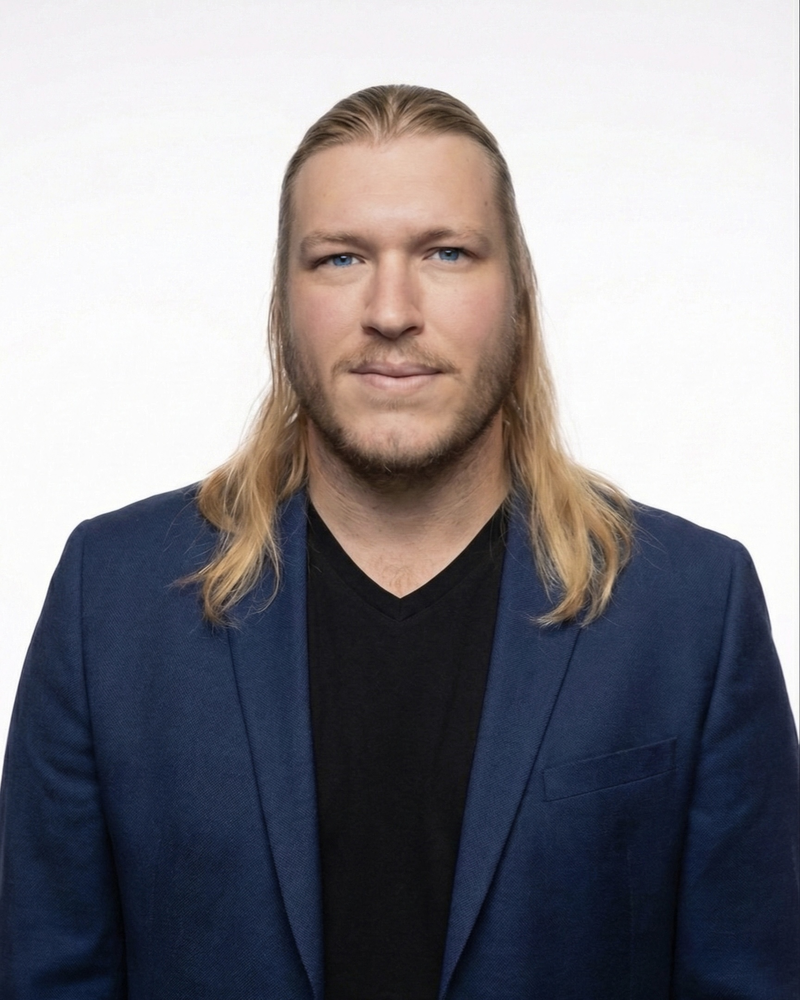

<!DOCTYPE html>
<html lang="en">
<head>
  <meta charset="UTF-8" />
  <meta name="viewport" content="width=device-width, initial-scale=1.0" />
  <title>Christian Matthews | CIO & IT Executive</title>

  <meta name="description" content="Christian Matthews — Strategic Technology Executive known for Capital Discipline and Operational Arbitrage." />
  <meta property="og:title" content="Christian Matthews | CIO & IT Executive" />
  <meta property="og:description" content="Delivering enterprise-grade reliability without enterprise-grade cost structures." />
  <meta property="og:type" content="website" />

  <script crossorigin src="https://unpkg.com/react@18/umd/react.production.min.js"></script>
  <script crossorigin src="https://unpkg.com/react-dom@18/umd/react-dom.production.min.js"></script>

  <script src="https://unpkg.com/@babel/standalone/babel.min.js"></script>

  <script src="https://cdn.tailwindcss.com"></script>

  <link href="https://fonts.googleapis.com/css2?family=Inter:wght@300;400;600;700&family=Playfair+Display:wght@700&display=swap" rel="stylesheet">

  <style>
    body {
      font-family: 'Inter', sans-serif;
      background-color: #0f172a;
      color: #e2e8f0;
      scroll-behavior: smooth;
    }
    h1, h2, h3, h4, .serif { font-family: 'Playfair Display', serif; }
    .gradient-text {
      background: linear-gradient(to right, #60a5fa, #34d399);
      -webkit-background-clip: text;
      -webkit-text-fill-color: transparent;
    }
    .glass-card {
      background: rgba(30, 41, 59, 0.7);
      backdrop-filter: blur(10px);
      border: 1px solid rgba(255, 255, 255, 0.1);
    }
    .timeline-line {
      position: absolute;
      left: 20px;
      top: 0;
      bottom: 0;
      width: 2px;
      background: #334155;
      z-index: 0;
    }
    @media (min-width: 768px) {
      .timeline-line {
        left: 50%;
        transform: translateX(-50%);
      }
    }
  </style>
</head>

<body>
  <div id="root"></div>

  <script type="text/babel">
    const { useMemo, useState, useRef } = React;

    // --- Icons ---
    const Icon = ({ children, size = 24, className = "" }) => (
      <svg xmlns="http://www.w3.org/2000/svg" width={size} height={size} viewBox="0 0 24 24"
        fill="none" stroke="currentColor" strokeWidth="2" strokeLinecap="round" strokeLinejoin="round"
        className={className}>
        {children}
      </svg>
    );

    const ArrowRight = (props) => <Icon {...props}><path d="M5 12h14" /><path d="m12 5 7 7-7 7" /></Icon>;
    const Download = (props) => <Icon {...props}><path d="M21 15v4a2 2 0 0 1-2 2H5a2 2 0 0 1-2-2v-4" /><polyline points="7 10 12 15 17 10" /><line x1="12" x2="12" y1="15" y2="3" /></Icon>;
    const Mail = (props) => <Icon {...props}><rect width="20" height="16" x="2" y="4" rx="2" /><path d="m22 7-8.97 5.7a1.94 1.94 0 0 1-2.06 0L2 7" /></Icon>;
    const Phone = (props) => <Icon {...props}><path d="M22 16.92v3a2 2 0 0 1-2.18 2 19.79 19.79 0 0 1-8.63-3.07 19.5 19.5 0 0 1-6-6 19.79 19.79 0 0 1-3.07-8.67A2 2 0 0 1 4.11 2h3a2 2 0 0 1 2 1.72 12.84 12.84 0 0 0 .7 2.81 2 2 0 0 1-.45 2.11L8.09 9.91a16 16 0 0 0 6 6l1.27-1.27a2 2 0 0 1 2.11-.45 12.84 12.84 0 0 0 2.81.7A2 2 0 0 1 22 16.92z" /></Icon>;
    const MapPin = (props) => <Icon {...props}><path d="M20 10c0 6-8 12-8 12s-8-6-8-12a8 8 0 0 1 16 0Z" /><circle cx="12" cy="10" r="3" /></Icon>;
    const TrendingUp = (props) => <Icon {...props}><polyline points="22 7 13.5 15.5 8.5 10.5 2 17" /><polyline points="16 7 22 7 22 13" /></Icon>;
    const ShieldCheck = (props) => <Icon {...props}><path d="M20 13c0 5-3.5 7.5-7.66 8.95a1 1 0 0 1-.67-.01C7.5 20.5 4 18 4 13V6a1 1 0 0 1 1-1c2 0 4.5-1.2 6.24-2.72a1.17 1.17 0 0 1 1.52 0C14.51 3.81 17 5 19 5a1 1 0 0 1 1 1z" /><path d="m9 12 2 2 4-4" /></Icon>;
    const Globe = (props) => <Icon {...props}><circle cx="12" cy="12" r="10" /><path d="M12 2a14.5 14.5 0 0 0 0 20 14.5 14.5 0 0 0 0-20" /><path d="M2 12h20" /></Icon>;
    const CheckCircle = (props) => <Icon {...props}><path d="M22 11.08V12a10 10 0 1 1-5.93-9.14" /><polyline points="22 4 12 14.01 9 11.01" /></Icon>;
    const Target = (props) => <Icon {...props}><circle cx="12" cy="12" r="10" /><circle cx="12" cy="12" r="6" /><circle cx="12" cy="12" r="2" /></Icon>;
    const DollarSign = (props) => <Icon {...props}><line x1="12" x2="12" y1="2" y2="22" /><path d="M17 5H9.5a3.5 3.5 0 0 0 0 7h5a3.5 3.5 0 0 1 0 7H6" /></Icon>;
    const Award = (props) => <Icon {...props}><circle cx="12" cy="8" r="7" /><polyline points="8.21 13.89 7 23 12 20 17 23 15.79 13.88" /></Icon>;
    const Linkedin = (props) => <Icon {...props}><path d="M16 8a6 6 0 0 1 6 6v7h-4v-7a2 2 0 0 0-2-2 2 2 0 0 0-2 2v7h-4v-7a6 6 0 0 1 6-6z" /><rect width="4" height="12" x="2" y="9" /><circle cx="4" cy="4" r="2" /></Icon>;
    const Clock = (props) => <Icon {...props}><circle cx="12" cy="12" r="10" /><polyline points="12 6 12 12 16 14" /></Icon>;
    const FileText = (props) => <Icon {...props}><path d="M14 2H6a2 2 0 0 0-2 2v16a2 2 0 0 0 2 2h12a2 2 0 0 0 2-2V8z" /><polyline points="14 2 14 8 20 8" /><line x1="16" x2="8" y1="13" y2="13" /><line x1="16" x2="8" y1="17" y2="17" /><polyline points="10 9 9 9 8 9" /></Icon>;
    const Anchor = (props) => <Icon {...props}><circle cx="12" cy="5" r="3" /><line x1="12" x2="12" y1="22" y2="8" /><path d="M5 12H2a10 10 0 0 0 20 0h-3" /></Icon>;
    const Mic = (props) => <Icon {...props}><path d="M12 1a3 3 0 0 0-3 3v8a3 3 0 0 0 6 0V4a3 3 0 0 0-3-3z" /><path d="M19 10v2a7 7 0 0 1-14 0v-2" /><line x1="12" x2="12" y1="19" y2="22" /><line x1="8" x2="16" y1="22" y2="22" /></Icon>;
    const Music = (props) => <Icon {...props}><path d="M9 18V5l12-2v13" /><circle cx="6" cy="18" r="3" /><circle cx="18" cy="16" r="3" /></Icon>;
    const Lightbulb = (props) => <Icon {...props}><line x1="9" x2="15" y1="18" y2="18" /><line x1="10" x2="14" y1="22" y2="22" /><path d="M15.09 14c.18-.98.65-1.74 1.41-2.5A4.65 4.65 0 0 0 9.5 6 4.65 4.65 0 0 0 8 15c0 1 1 2 2 3" /></Icon>;

    // --- Components ---
    const Nav = () => (
      <nav className="fixed top-0 w-full z-50 bg-slate-900/90 backdrop-blur-md border-b border-slate-800">
        <div className="max-w-6xl mx-auto px-6 h-16 flex items-center justify-between">
          <div className="text-xl font-bold tracking-tighter text-white">
            CM<span className="text-blue-400">.</span>
          </div>
          <div className="hidden md:flex space-x-8 text-sm font-medium text-slate-300">
            <a href="#impact" className="hover:text-blue-400 transition">Impact</a>
            <a href="#experience" className="hover:text-blue-400 transition">Track Record</a>
            <a href="#education" className="hover:text-blue-400 transition">Education</a>
            <a href="#about" className="hover:text-blue-400 transition">About</a>
            <a href="#personal" className="hover:text-blue-400 transition">Personal</a>
            <a href="#contact" className="hover:text-blue-400 transition">Contact</a>
          </div>
          <div className="flex items-center gap-4">
            <a href="https://www.linkedin.com/in/cmatthews2022/" target="_blank" rel="noopener noreferrer" className="text-slate-400 hover:text-white transition">
                <Linkedin size={20} />
            </a>
            <a href="#contact" className="bg-blue-600 hover:bg-blue-500 text-white px-4 py-2 rounded-full text-sm font-medium transition flex items-center gap-2">
                <Mail size={14} /> Connect
            </a>
          </div>
        </div>
      </nav>
    );

    const Hero = () => (
      <section className="relative pt-32 pb-16 px-6 min-h-[85vh] flex items-center justify-center overflow-hidden">
        <div className="absolute top-0 left-0 w-full h-full overflow-hidden z-0 opacity-20">
          <div className="absolute top-[-10%] right-[-5%] w-96 h-96 bg-blue-600 rounded-full blur-[100px]"></div>
          <div className="absolute bottom-[-10%] left-[-5%] w-96 h-96 bg-teal-500 rounded-full blur-[100px]"></div>
        </div>

        <div className="max-w-5xl mx-auto relative z-10 text-center">
          <div className="inline-block px-3 py-1 mb-6 rounded-full bg-slate-800 border border-slate-700 text-blue-400 text-xs font-bold tracking-widest uppercase">
            Executive Profile
          </div>
          
          <h1 className="text-5xl md:text-8xl font-bold text-white mb-2 leading-tight tracking-tight">
            Christian Matthews
          </h1>
          
          <h2 className="text-3xl md:text-5xl font-bold text-slate-300 mb-6 leading-tight">
            Strategic <span className="serif italic text-slate-400">Technology</span> <span className="gradient-text">Executive</span>
          </h2>
          
          <p className="text-lg md:text-xl text-slate-400 max-w-3xl mx-auto mb-10 leading-relaxed">
            Known for <strong>Capital Discipline</strong> and <strong>Operational Arbitrage</strong>: delivering enterprise-grade reliability without enterprise-grade cost structures. Expert in entering low-maturity ("wild west") environments and implementing the governance, standards, and cost controls required to scale.
          </p>

          <div className="flex flex-col md:flex-row items-center justify-center gap-4">
             <a
              href="Christian_Matthews_CIO_CV_2026.pdf" 
              target="_blank" rel="noopener noreferrer"
              className="bg-white text-slate-900 px-6 py-3 rounded-full font-bold hover:bg-slate-200 transition flex items-center gap-2"
            >
              <Download size={18} /> Resume
            </a>

            <a
              href="Christian_Matthews_CIO_Cover_Letter_2026-merged.pdf" 
              target="_blank" rel="noopener noreferrer"
              className="px-6 py-3 rounded-full border border-slate-700 text-slate-300 hover:bg-slate-800 transition flex items-center gap-2"
            >
              <FileText size={18} /> Cover Letter
            </a>

            <a
              href="Christian_Matthews_CIO_Executive_Summary_2026.pdf" 
              target="_blank" rel="noopener noreferrer"
              className="px-6 py-3 rounded-full border border-slate-700 text-slate-300 hover:bg-slate-800 transition flex items-center gap-2"
            >
              <FileText size={18} /> Executive Summary
            </a>
          </div>
        </div>
      </section>
    );

    const Metrics = () => {
      // "Career Impact (By The Numbers)" from Resume
      const stats = useMemo(() => ([
        { label: "Net-New Revenue", value: "$1.6M", sub: "Built Field Services Practice", icon: <TrendingUp className="text-green-400" /> },
        { label: "Margin Uplift", value: "10-15%", sub: "Exceeded modeled margins", icon: <TrendingUp className="text-blue-400" /> },
        { label: "OpEx Savings", value: "$500K", sub: "Annual recurring reduction", icon: <DollarSign className="text-teal-400" /> },
        { label: "Reliability", value: "100%", sub: "Uptime (SD-WAN Modernization)", icon: <ShieldCheck className="text-purple-400" /> },
      ]), []);

      return (
        <section id="impact" className="py-12 border-y border-slate-800 bg-slate-900/50 backdrop-blur-sm">
          <div className="max-w-6xl mx-auto px-6 grid grid-cols-2 md:grid-cols-4 gap-8">
            {stats.map((stat, idx) => (
              <div key={idx} className="text-center group hover:-translate-y-1 transition duration-300">
                <div className="flex justify-center mb-3 opacity-80 group-hover:opacity-100 transition">{stat.icon}</div>
                <div className="text-3xl font-bold text-white mb-1">{stat.value}</div>
                <div className="text-sm font-semibold text-slate-300">{stat.label}</div>
                <div className="text-xs text-slate-500 mt-1">{stat.sub}</div>
              </div>
            ))}
          </div>
        </section>
      );
    };

    const ExperienceItem = ({ role, subRole, company, logoUrl, period, description, highlights, isRight, brandColor }) => {
      // Logic to handle image load errors by showing a fallback box
      const [imgError, setImgError] = useState(false);

      return (
        <div className={`relative mb-16 md:mb-0 w-full md:w-1/2 ${isRight ? 'md:ml-auto md:pl-12' : 'md:pr-12'}`}>
          <div className={`hidden md:block absolute top-6 w-4 h-4 rounded-full border-4 border-slate-900 bg-blue-500 z-10 ${isRight ? '-left-[10px]' : '-right-[10px]'}`}></div>

          <div className="glass-card p-8 rounded-xl hover:border-blue-500/30 transition duration-300">
            
            {/* Header Row with Logo */}
            <div className="flex justify-between items-start gap-4 mb-4">
              <div className="flex-1">
                  <h3 className="text-xl font-bold text-white leading-tight">
                      {role}
                      {subRole && <span className="block text-base font-normal text-slate-400 mt-1">{subRole}</span>}
                  </h3>
                  <div className="text-blue-400 font-medium mt-1">{company}</div>
                  <div className="text-slate-500 text-sm mt-1">{period}</div>
              </div>
              
              {/* Logo Logic: Show image if available, otherwise show fallback initial with Brand Color */}
              {logoUrl && !imgError ? (
                  <div className="flex-shrink-0 bg-white p-1 rounded-lg h-16 w-16 flex items-center justify-center overflow-hidden border border-slate-700/50 shadow-lg relative">
                       setImgError(true)}
                      />
                  </div>
              ) : (
                  // Fallback: Box is WHITE, Text is BRAND COLOR
                  <div 
                    className="flex-shrink-0 p-1 rounded-lg h-16 w-16 flex items-center justify-center border border-slate-700 shadow-lg bg-white"
                  >
                      <span className="font-bold text-2xl" style={{ color: brandColor || '#334155' }}>
                        {company.charAt(0)}
                      </span>
                  </div>
              )}
            </div>

            {description && (
              <p className="text-slate-400 text-sm mb-6 leading-relaxed italic border-l-2 border-slate-700 pl-3">
                {description}
              </p>
            )}

            <ul className="space-y-3">
              {highlights.map((item, i) => (
                <li key={i} className="flex items-start gap-2 text-sm text-slate-300">
                  <span className="text-blue-500 mt-1 font-bold">▹</span>
                  <span>
                    <strong className="text-slate-200">{item.title}:</strong> {item.body}
                  </span>
                </li>
              ))}
            </ul>
          </div>
        </div>
      );
    };

    const Timeline = () => (
      <section id="experience" className="py-24 px-6 bg-slate-950 relative">
        <div className="text-center mb-16">
          <h2 className="text-3xl md:text-4xl font-bold text-white mb-4">Professional Experience</h2>
          <p className="text-slate-400 max-w-2xl mx-auto">
            A trajectory defined by rapid ascent, revenue protection, and strategic turnarounds.
          </p>
        </div>

        <div className="max-w-6xl mx-auto relative">
          <div className="timeline-line hidden md:block"></div>

          {/* BURWOOD: BMS */}
          <ExperienceItem
            isRight={false}
            role="Operations Engineering Lead"
            subRole="NOC & Service Desk"
            company="Burwood Group"
            logoUrl="https://images.squarespace-cdn.com/content/v1/5a09abcb90bcce4bd5518c91/1515690831119-YJSK13DSLY1DM9RY7WWC/burwood-logo.png?format=1500w"
            brandColor="#16a34a" 
            period="Jan 2026 – Present"
            description="Selected by ownership to pilot a blended P&L integration between Professional Services and Managed Services."
            highlights={[
              { title: "Strategic Pilot", body: "Executing a proof-of-concept 'blended P&L' utilization model intended to scale across additional practices (Voice, Cloud, Security, EUC)." },
              { title: "Operational Turnaround", body: "Restructuring NOC and Service Desk operations; elevating technical standards, escalation paths, and service guardrails." },
              { title: "Service Commercialization", body: "Positioning a dormant service desk offering for scalable growth with operational QA, defined roles, and maturity controls." }
            ]}
          />

          {/* BURWOOD: PRACTICE LEAD */}
          <ExperienceItem
            isRight={true}
            role="Practice Lead"
            subRole="Enterprise Networking & Field Services"
            company="Burwood Group"
            logoUrl="https://images.squarespace-cdn.com/content/v1/5a09abcb90bcce4bd5518c91/1515690831119-YJSK13DSLY1DM9RY7WWC/burwood-logo.png?format=1500w"
            brandColor="#16a34a"
            period="Aug 2024 – Dec 2025"
            description="Founded and scaled Field Services while retaining delivery accountability for Enterprise Networking."
            highlights={[
              { title: "P&L / Targets", body: "Co-managed Enterprise Networking against a $5.6M annual practice target while independently building Field Services into a $1.6M net-new revenue stream." },
              { title: "Practice Creation", body: "Built Field Services from 0 to 25 direct reports to reduce third-party contractor reliance and capture margin leakage (Field Nation / one-offs)." },
              { title: "Presales Rigor", body: "Implemented rigorous auditing against solutions architects in presales to prevent scope creep and stress-testing delivery realism for true cost-to-serve before contract signature." },
              { title: "Margin Discipline", body: "Instituted conservative delivery constraints (capacity, travel costs, risk allowances) to ensure 10–15% higher realized margin than baseline models." },
              { title: "Scaled Frameworks", body: "Adapted proprietary M&A migration framework for an $800M VC-backed financial services startup, enabling rapid multi-state acquisition integration." }
            ]}
          />

          {/* BURWOOD: TEAM LEAD */}
          <ExperienceItem
            isRight={false}
            role="Team Lead"
            subRole="Enterprise Networking"
            company="Burwood Group"
            logoUrl="https://images.squarespace-cdn.com/content/v1/5a09abcb90bcce4bd5518c91/1515690831119-YJSK13DSLY1DM9RY7WWC/burwood-logo.png?format=1500w"
            brandColor="#16a34a"
            period="Mar 2024 – Aug 2024"
            description="Role created after one year of high-impact delivery as Technical Architect and delivery lead on the firm’s largest account, combining team leadership with ongoing hands-on execution."
            highlights={[
              { title: "Dual-Role Leadership", body: "Balanced the player-coach model by managing team capacity and utilization against a $5.6M practice target while personally billing as a Technical Architect and delivery lead on complex engagements." },
              { title: "High-Touch Enterprise Escalation", body: "Served as the primary technical backstop for high-complexity enterprise clients, stepping in when delivery exceeded standard VAR capabilities and required deep architectural judgment." },
              { title: "Delivery Quality & Standards", body: "Oversaw delivery quality across a mixed bench of CCNA, CCNP, and CCIE consultants, enforcing implementation standards used on the firm’s largest and most visible accounts." },
              { title: "Presales Reality Check", body: "Partnered with sales and architecture to validate scope, assumptions, and delivery feasibility before contract signature, reducing downstream risk and execution drift." },
              { title: "Client Recovery & Retention", body: "Engaged by ownership to lead recovery bridges for missed or at-risk cutovers, restoring delivery confidence and converting unstable engagements into retained and expanded client relationships." }
            ]}
          />

          {/* BURWOOD: ARCHITECT */}
          <ExperienceItem
            isRight={true}
            role="Technical Architect"
            subRole="Enterprise Networking & Hybrid Infrastructure (Contractor)"
            company="Burwood Group"
            logoUrl="https://images.squarespace-cdn.com/content/v1/5a09abcb90bcce4bd5518c91/1515690831119-YJSK13DSLY1DM9RY7WWC/burwood-logo.png?format=1500w"
            brandColor="#16a34a"
            period="Feb 2023 – Feb 2024"
            description="Recruited via LinkedIn to lead critical M&A integrations for the firm’s largest newly signed account (1,000+ locations; 250-site migration). Delivered nights and weekends on a contract basis concurrent with my Global IT Director role, fully disclosed and approved by executive leadership at both Burwood and Leisure Pools."
            highlights={[
              { title: "Mass-Scale Standardization", body: "Homogenized infrastructure across acquired sites by enforcing a fixed SD-WAN and switching template (VeloCloud, Cradlepoint LTE, Aruba Central SDN), eliminating configuration drift and reducing operational variability." },
              { title: "Clinical Workflow Migration", body: "Led integration of specialized medical endpoints and PIMS databases, executing zero-data-loss cutovers in regulated, uptime-sensitive environments. Migrated bare metal hosts and/or virtual hosts to standardized Dell imaged ESXi hosts and VM design centrally managed in vCenter." },
              { title: "Methodology Turnaround", body: "Took over a failing migration approach and rebuilt it into a repeatable, disciplined playbook that became the customer-mandated standard for all vendors supporting future implementation." },
              { title: "Command & Escalation", body: "Ran high-pressure weekend cutovers involving 20+ engineers and Smart Hands, coordinating up to five simultaneous site migrations while serving as final technical escalation." },
              { title: "Cutover Governance", body: "Built the go-live controls that prevented “hope-and-pray” migrations, established standardized implementation and test plans that included pre-cutover validation checklists, go/no-go gates, rollback criteria, and post-cutover validation steps so every site had a consistent, auditable outcome." }
            ]}
          />

          {/* EXPLORE INDUSTRIES */}
          <ExperienceItem
            isRight={false}
            role="Global IT Director"
            subRole="(Promoted from IT Support Manager, North America)"
            company="Explore Industries / Leisure Pools"
            logoUrl="https://exploreindustries.com/wp-content/uploads/2022/02/Logo_ExploreIndustries-400x100.png"
            brandColor="#000000"
            period="Oct 2020 – 2024"
            description="Recruited from Beneteau post-acquisition to professionalize global infrastructure and security."
            highlights={[
              { title: "Cloud & Infrastructure Modernization", body: "Architected a hybrid infrastructure, integrating on-prem AD with M365 and Azure Entra ID to ensure high availability for corporate and manufacturing environments." },
              { title: "Secure Remote Access", body: "Designed and managed Azure Virtual Networks (VNets) to deploy Azure Virtual Desktop (AVD) environments, enabling secure, domain-joined remote access for support teams on personal devices." },
              { title: "M&A Integration", body: "Built M365 tenants from scratch and led data library migrations to the cloud, seamlessly integrating employees and assets from acquired companies. Company acquired/greenfielded 13 manufacturing facilities globally during my tenure." },
              { title: "Infrastructure Capital Arbitrage", body: "Replaced subscription-heavy Cisco Meraki stacks with high-performance Ubiquiti architecture across manufacturing sites. Eliminated licensing fees while improving throughput, yielding $500k in validated savings." },
              { title: "Global P&L Authority", body: "Managed a $2.1M operational budget, delivering executive-level reporting on global capital allocation, vendor consolidation, and opex reduction." }
            ]}
          />

          {/* BENETEAU */}
          <ExperienceItem
            isRight={true}
            role="Senior Network Administrator"
            company="Beneteau"
            logoUrl="https://storage.googleapis.com/endurance-apps-liip/media/cache/beneteau_no_filter_grid_fs/6316efb35d7cbf6ae30574c1"
            brandColor="#002D72"
            period="Nov 2017 – Oct 2020"
            description="Recruited specifically to leverage Windstream carrier background to remediate North American infrastructure."
            highlights={[
              { title: "Systems Administration", body: "Provided sole systems administration for 300+ users across North America, managing Active Directory, Group Policy, and Windows Server environments." },
              { title: "Domain Consolidation", body: "Led the complex consolidation of 5 disparate Active Directory environments following the acquisition of multiple boating brands, unifying identity management under a single corporate domain." },
              { title: "Industry-Recognized Turnaround", body: "Featured in a Windstream National Success Story ('Righting the Ship') for reducing system management time from 60 minutes to <3 minutes." },
              { title: "SD-WAN Modernization", body: "Upgraded MPLS to SD-WAN achieving 100% uptime for services hosted in Marion, SC across North American sites." },
              { title: "Technology Validation", body: "Selected to pilot enterprise offerings (EnGenius DECT) in a live manufacturing environment, solving critical communication failures and influencing Windstream to adopt the product line." }
            ]}
          />

          {/* SEA ISLAND */}
          <ExperienceItem
            isRight={false}
            role="Director of IT / Asst. Director of AV"
            company="Sea Island Resort"
            logoUrl="https://www.seaisland.com/content/uploads/2024/12/Sea-Island-640x768.png"
            brandColor="#897A5E"
            period="Nov 2016 – Nov 2017"
            description="Recruited based on a rare blend of hands-on IT support roots, carrier-grade network engineering, technology leadership, and professional audio/AV production experience, well suited for a Forbes Five-Star luxury resort consolidating IT and AV under a new P&L model."
            highlights={[
              { title: "High-Stakes Event Support", body: "Coordinated technology delivery for high-grossing corporate events (>$5M revenue), including PGA Tour events and automotive board meetings." },
              { title: "Government/VIP Security", body: "Partnered directly with the Secret Service and FBI to implement segmented VLANs and secure Wi-Fi for high-profile government officials and VIP guests." },
              { title: "Fiber Infrastructure Modernization", body: "Directed the deployment of a fiber network backbone (Cisco Catalyst 3750s) across the 'multi-island' property to replace legacy copper and increase bandwidth." },
              { title: "Team Leadership", body: "Led a tiered operations team (5 Service Delivery Managers, 25+ Technicians) to meet strict 'Five-Star' service SLAs." },
              { title: "Legacy Voice Operations", body: "Managed the 5ESS voice system and complex routing for the resort's multi-property telecom network." }
            ]}
          />

          {/* WINDSTREAM */}
          <ExperienceItem
            isRight={true}
            role="Team Lead"
            subRole="Reseller & CLEC Support"
            company="Windstream Enterprise"
            logoUrl="https://s23.q4cdn.com/443634105/files/WINFusionLogo-H-4C.png"
            brandColor="#4F2C80"
            period="Jun 2015 – Nov 2016"
            description="Promoted from Network VoIP Analyst II > Voice Analyst III > Reseller/CLEC Support Team Lead in <12 months."
            highlights={[
              { title: "Rapid Ascent", body: "Selected to lead the newly formed CLEC support division in Greenville, SC, based on execution velocity and technical judgment." },
              { title: "Revenue Protection", body: "Managed high-stakes technical operations for wholesale/CLEC partners where individual accounts carried >$2,000,000/month billing exposure." },
              { title: "Operational Definition", body: "Established support standards for the net-new team, moving the culture from 'ticket closing' to 'revenue retention.'" },
              { title: "Carrier-Grade Escalation", body: "Acted as final internal escalation point for complex SIP, PRI, and transport failures impacting live voice traffic across multi-state CLEC networks." },
              { title: "Wholesale Network Ownership", body: "Owned end-to-end technical responsibility for reseller and CLEC environments, from provisioning through live-traffic stabilization, under strict SLA and penalty exposure." }
            ]}
          />
          
          {/* EARLY CAREER FOUNDATION */}
          <div className="relative mb-16 md:mb-0 w-full md:w-1/2 md:pr-12">
            <div className="hidden md:block absolute top-6 -right-[10px] w-4 h-4 rounded-full border-4 border-slate-900 bg-slate-500 z-10"></div>
            
            <div className="glass-card p-8 rounded-xl hover:border-blue-500/30 transition duration-300">
              <h3 className="text-xl font-bold text-white mb-6 leading-tight">Early Career Foundation</h3>
              
              <div className="mb-6">
                  <div className="text-blue-400 font-medium">IT Support Specialist</div>
                  <div className="text-slate-400 text-sm">Sonoco (Fortune 500 Manufacturing) | 2014</div>
                  <p className="text-slate-400 text-sm mt-2 leading-relaxed">
                    Frontline IT support in a safety-critical manufacturing environment, building early fluency in enterprise standards, asset control, and disciplined service delivery. Those principles later made me the person leadership relied on during COVID-era hypergrowth, when we were onboarding new hires daily and 16-week Dell and Lenovo lead times threatened to stall the business.
                 </p>
              </div>

              <div className="mb-6">
                  <div className="text-blue-400 font-medium">IT Help Desk Technician</div>
                  <div className="text-slate-400 text-sm">Florence-Darlington Tech. College | 2013</div>
                  <p className="text-slate-400 text-sm mt-2 leading-relaxed">
                    Recommended directly by my professors after my first semester to support campus IT operations. Built strong fundamentals in end-user support, troubleshooting, documentation, and public-sector systems that formed the foundation for everything that followed.
                 </p>
              </div>

              <div>
                <div className="text-blue-400 font-medium">Customer Service & Client-Facing Foundations</div>
                <div className="text-slate-400 text-sm">Retail, Hospitality & Instruction | 2010–2013</div>
                <p className="text-slate-400 text-sm mt-2 leading-relaxed">
                  Built early service discipline and client communication skills through roles as a private music instructor and positions at Best Buy, CVS, and Ruby Tuesday. Learned to manage expectations, stay composed under pressure, and deliver consistent outcomes in fast-paced, customer-facing environments.
                </p>
              </div>
            </div>
          </div>
        </div>
      </section>
    );

    const Education = () => (
      <section id="education" className="py-20 px-6 bg-slate-900 border-t border-slate-800">
        <div className="max-w-4xl mx-auto">
          <div className="text-center mb-12">
            <h2 className="text-3xl font-bold text-white mb-4">Education & Certifications</h2>
          </div>
          
          <div className="grid md:grid-cols-2 gap-8">
            <div className="glass-card p-8 rounded-xl">
              <div className="flex items-center gap-3 mb-4">
                <Award className="text-blue-500" size={28} />
                <h3 className="text-xl font-bold text-white">Degrees</h3>
              </div>
              <ul className="space-y-4">
                <li>
                  <div className="font-semibold text-slate-200">A.S., Network Systems Management</div>
                  <div className="text-blue-400 text-sm">Florence-Darlington Technical College (2015)</div>
                  <div className="text-slate-500 text-xs mt-1">Tech-Stars Scholarship, Dean’s List</div>
                </li>
              </ul>
            </div>

            <div className="glass-card p-8 rounded-xl">
               <div className="flex items-center gap-3 mb-4">
                <ShieldCheck className="text-teal-500" size={28} />
                <h3 className="text-xl font-bold text-white">Certifications</h3>
              </div>
              <ul className="space-y-3 text-sm text-slate-300">
                <li className="flex justify-between border-b border-slate-800 pb-2">
                  <span>ITIL Foundation in IT Service Management</span>
                  <span className="text-slate-500">2022</span>
                </li>
                <li className="flex justify-between border-b border-slate-800 pb-2">
                  <span>CCNA – Routing and Switching</span>
                  <span className="text-slate-500">2015</span>
                </li>
                 <li className="flex justify-between border-b border-slate-800 pb-2">
                  <span>IT Essentials (Cisco Academy)</span>
                  <span className="text-slate-500">2014</span>
                </li>
                <li className="flex justify-between border-b border-slate-800 pb-2">
                  <span>Cisco Networking</span>
                  <span className="text-slate-500">2015</span>
                </li>
                 <li className="flex justify-between pb-2">
                  <span>Fundamentals of Networking</span>
                  <span className="text-slate-500">2015</span>
                </li>
              </ul>
            </div>
          </div>
        </div>
      </section>
    );

    const AboutMe = () => {
      return (
        <section id="about" className="py-24 px-6 bg-slate-950 border-t border-slate-800">
          <div className="max-w-6xl mx-auto grid md:grid-cols-2 gap-16 items-center">
             {/* IMAGE COLUMN */}
             <div className="relative group mx-auto md:mx-0 order-first md:order-last">
                <div 
                  className="w-64 h-64 md:w-80 md:h-80 rounded-2xl border-4 border-slate-800 shadow-2xl overflow-hidden relative z-10 bg-slate-800"
                >
                   {
                      e.target.onerror = null; 
                      e.target.parentNode.innerHTML = `
                        <div class="flex flex-col items-center justify-center h-full text-slate-500 text-center p-4">
                          <div class="text-4xl mb-2">📷</div>
                          <div class="font-bold text-white mb-1">Image Not Found</div>
                          <div class="text-xs">Ensure profile.png is in the same folder</div>
                        </div>
                      `;
                    }}
                  />
                </div>
                {/* Glow Effect */}
                <div className="absolute top-1/2 left-1/2 -translate-x-1/2 -translate-y-1/2 w-64 h-64 bg-blue-500/20 blur-3xl rounded-full -z-10 group-hover:bg-blue-500/30 transition duration-500"></div>
            </div>

            {/* TEXT COLUMN */}
            <div>
              <div className="flex flex-col items-center md:items-start text-center md:text-left">
                <div className="inline-block px-3 py-1 mb-6 rounded-full bg-slate-800 border border-slate-700 text-teal-400 text-xs font-bold tracking-widest uppercase mx-auto md:mx-0">
                  Leadership Philosophy
                </div>
                <h2 className="text-3xl md:text-4xl font-bold text-white mb-6">
                  A Steady Hand at the Helm
                </h2>
                <div className="space-y-6 text-lg text-slate-400 leading-relaxed text-left">
                  <p>
                    My leadership style is defined by mutual transparency and trust. Having spent years in the marine and fiberglass composites manufacturing sectors at <strong>Beneteau</strong> and <strong>Explore Industries/Leisure Pools</strong>, I learned early that you cannot manage a storm from a spreadsheet.
                  </p>
                  <p>
                    I believe that if I am checking reports before I am checking on my team, I have already lost. True scalability comes from retaining the talent that makes the company successful, which requires building genuine trust and securing buy-in from both the server room and the boardroom.
                  </p>
                  <p>
                      While I bring the financial discipline of a strategic executive, I never lose the operational empathy of the person who has to keep the systems running. My goal is to create an environment where engineers feel empowered to speak the ground truth, feeding me the most accurate data unfiltered, allowing us to navigate complex integrations and stabilize critical infrastructure with calmness and clarity.
                  </p>
                </div>
              </div>
            </div>
          </div>
        </section>
      );
    };

    const Personal = () => (
      <section id="personal" className="py-20 px-6 bg-slate-900 border-t border-slate-800">
        <div className="max-w-4xl mx-auto">
          <div className="text-center mb-16">
            <div className="inline-flex items-center gap-3 px-3 py-1 mb-6 rounded-full bg-slate-800 border border-slate-700 text-purple-400 text-xs font-bold tracking-widest uppercase">
              <Mic size={14} /> Beyond the Boardroom
            </div>
            <h2 className="text-3xl md:text-4xl font-bold text-white mb-4">
              The Engineer & The Creative
            </h2>
            <div className="max-w-3xl mx-auto space-y-6">
              <p className="text-lg text-slate-400 leading-relaxed">
                My path into IT started with music creation. In my early teens, as a weird, synthesizer-playing 13-year-old obsessed with Yanni and composing instrumental music, I got good at production and signal flow because I had to understand why things worked or didn’t work in the studio. I learned early on that music itself might not reliably pay the bills, but diagnosing cables, routing signals, and blinking lights absolutely would.
              </p>
              <p className="text-lg text-slate-400 leading-relaxed">
                That curiosity evolved into a career in technology, while music and live production remained a constant alongside it. When I’m not working, I’m usually in my home studio producing or directing live event A/V for churches. I’m also a husband, a dad to a 1-year-old, and we have three cats at home, which keeps life loud, busy, and grounded.
              </p>
              <p className="text-lg text-slate-400 leading-relaxed italic">
                If you want to nerd out, the sections below go deeper outside of my IT career and focus on the audio, live production, and church systems work I’ve built.
              </p>
            </div>
          </div>

          <div className="flex flex-col gap-10">
            {/* Card 1: Audio & Touring */}
            <div className="glass-card p-8 rounded-xl border-l-4 border-purple-500">
              <div className="flex flex-col md:flex-row gap-8">
                <div className="md:w-1/3">
                  <div className="flex items-center gap-3 mb-4">
                    <Music className="text-purple-400" size={28} />
                    <h3 className="text-2xl font-bold text-white">Professional Audio & Touring</h3>
                  </div>
                  <p className="text-slate-400 text-sm leading-relaxed mb-4">
                    My ear was trained in the studio and battle-tested on the road. I apply the same rigor to signal flow as I do to network packets.
                  </p>
                </div>
                <div className="md:w-2/3 space-y-6">
                  <div>
                    <h4 className="text-sm font-bold text-slate-200 uppercase tracking-wide mb-2">The A1 Standard</h4>
                    <p className="text-slate-400 text-sm leading-relaxed">
                      I’ve served as Front of House (A1) engineer for exclusive engagements at Sea Island, mixing for artists like <strong>Adele</strong> (Avid VENUE SC48), <strong>Darius Rucker of Hootie and the Blowfish</strong> (Solid State Logic L500), and <strong>The Marshall Tucker Band</strong> (Allen & Heath Qu32).
                    </p>
                  </div>
                  <div>
                      <h4 className="text-sm font-bold text-slate-200 uppercase tracking-wide mb-2">Hybrid Studio Architecture</h4>
                      <p className="text-slate-400 text-sm leading-relaxed">
                        My home studio acts as my laboratory for precision. It is built around <strong>RME UFX III</strong> mastering-grade converters with a MADI network feeding <strong>Antelope Orion</strong> converters. I utilize <strong>McDSP APB</strong> for hybrid analog processing with instant recall, alongside classic <strong>SSL</strong> and <strong>SPL</strong> outboard gear.
                      </p>
                  </div>
                  <div className="grid grid-cols-2 gap-4 pt-2">
                    <div className="flex items-start gap-2 text-sm text-slate-300">
                      <span className="text-purple-500 mt-1">▹</span>
                      <span><strong>Touring:</strong> Former Lead Guitarist for Eddie James (2011 Tour). I understand the artist's needs because I have lived on the stage.</span>
                    </div>
                    <div className="flex items-start gap-2 text-sm text-slate-300">
                      <span className="text-purple-500 mt-1">▹</span>
                      <span><strong>Consoles:</strong> Deep fluency in SSL Live, Avid VENUE, Behringer/Midas X32, Midas Pro 3/6/9/X Series, and Allen & Heath ecosystems.</span>
                    </div>
                  </div>
                </div>
              </div>
            </div>

            {/* Card 2: Visuals */}
            <div className="glass-card p-8 rounded-xl border-l-4 border-teal-500">
              <div className="flex flex-col md:flex-row gap-8">
                <div className="md:w-1/3">
                  <div className="flex items-center gap-3 mb-4">
                    <Lightbulb className="text-teal-400" size={28} />
                    <h3 className="text-2xl font-bold text-white">Visuals & Production Strategy</h3>
                  </div>
                  <p className="text-slate-400 text-sm leading-relaxed">
                    Translating creative concepts into technical reality for large-scale events with significant budget exposure.
                  </p>
                </div>
                <div className="md:w-2/3 space-y-6">
                  <div>
                    <h4 className="text-sm font-bold text-slate-200 uppercase tracking-wide mb-2">The Technical Director</h4>
                    <p className="text-slate-400 text-sm leading-relaxed">
                      I have managed the logistics of large-scale events with <strong>$2M+ budgets</strong>. I speak the language of rental houses, allowing me to negotiate aggressive pricing on gear.
                    </p>
                  </div>
                  <ul className="space-y-3 text-slate-300 text-sm">
                    <li className="flex items-start gap-2">
                      <span className="text-teal-500 mt-1">▹</span>
                      <span><strong>Visuals:</strong> Directed teams handling 20K+ Lumen projection stacks (Christie & EIKI) and complex mapping for ballrooms and arenas.</span>
                    </li>
                    <li className="flex items-start gap-2">
                      <span className="text-teal-500 mt-1">▹</span>
                      <span><strong>Lighting:</strong> Designed intelligent lighting plots using Leko Source Fours, custom Gobos, and truss-mounted arrays for brand-specific atmospherics.</span>
                    </li>
                      <li className="flex items-start gap-2">
                      <span className="text-teal-500 mt-1">▹</span>
                      <span><strong>The Bridge:</strong> Applying the same rigor of presales development—selling multi-million dollar budgets to Ford Corporate—to creating sustainable technical teams for local church plants.</span>
                    </li>
                  </ul>
                </div>
              </div>
            </div>

            {/* Card 3: Ministry */}
            <div className="glass-card p-8 rounded-xl border-l-4 border-blue-500">
              <div className="flex flex-col md:flex-row gap-8">
                <div className="md:w-1/3">
                  <div className="flex items-center gap-3 mb-4">
                    <Anchor className="text-blue-400" size={28} />
                    <h3 className="text-2xl font-bold text-white">Ministry & Church Planting</h3>
                  </div>
                  <p className="text-slate-400 text-sm leading-relaxed">
                    I don't just keep this expertise for the corporate world; I pour it back into the Kingdom.
                  </p>
                </div>
                <div className="md:w-2/3 space-y-6">
                  <div>
                    <h4 className="text-sm font-bold text-slate-200 uppercase tracking-wide mb-2">The Heart for the Local Church</h4>
                    <p className="text-slate-400 text-sm leading-relaxed">
                      I consult for church plants across the Southeast (Spartanburg, Greenville, Columbia, Florence, and Myrtle Beach), designing "turnkey" portable AVL systems that volunteers can set up in 90 minutes along with permanent installs of Midas Pro 6/X and Behringer X32 consoles with Dante and AES50 stage box networking tied into live-streaming.
                    </p>
                  </div>
                  <div className="grid grid-cols-1 md:grid-cols-2 gap-4">
                      <div>
                        <h4 className="text-sm font-bold text-slate-200 uppercase tracking-wide mb-1">Mentorship</h4>
                        <p className="text-slate-400 text-sm">Training volunteer teams on signal flow, gain staging, and critical listening.</p>
                      </div>
                      <div>
                        <h4 className="text-sm font-bold text-slate-200 uppercase tracking-wide mb-1">The Goal</h4>
                        <p className="text-slate-400 text-sm">Helping pastors build technical infrastructures that support their vision without breaking their budget.</p>
                      </div>
                  </div>
                </div>
              </div>
            </div>
          </div>
        </div>
      </section>
    );

    const Contact = () => (
      <section id="contact" className="py-20 px-6 bg-slate-900 border-t border-slate-800">
        <div className="max-w-4xl mx-auto text-center">
          <h2 className="text-3xl font-bold text-white mb-8">Connect</h2>
          <p className="text-slate-400 mb-10">
            Exploring CIO and senior leadership roles in growth-stage organizations (250–1,500 employees).
          </p>

          <div className="flex flex-col md:flex-row justify-center gap-6">
            <div className="flex items-center justify-center gap-3 text-slate-300 bg-slate-900 px-6 py-4 rounded-lg border border-slate-800 hover:border-blue-500 transition cursor-pointer">
              <Mail className="text-blue-500" />
              <a href="mailto:christianmatthews@outlook.com" className="hover:text-blue-400 transition">
                christianmatthews@outlook.com
              </a>
            </div>

            <div className="flex items-center justify-center gap-3 text-slate-300 bg-slate-900 px-6 py-4 rounded-lg border border-slate-800 hover:border-blue-500 transition cursor-pointer">
              <Phone className="text-blue-500" />
              <a href="tel:+18434538363" className="hover:text-blue-400 transition">
                (843) 453-8363
              </a>
            </div>
             <div className="flex items-center justify-center gap-3 text-slate-300 bg-slate-900 px-6 py-4 rounded-lg border border-slate-800 hover:border-blue-500 transition cursor-pointer">
              <Linkedin className="text-blue-500" />
              <a href="https://www.linkedin.com/in/cmatthews2022/" target="_blank" rel="noopener noreferrer" className="hover:text-blue-400 transition">
                LinkedIn Profile
              </a>
            </div>
          </div>
            <div className="mt-6 flex justify-center">
                 <div className="flex items-center justify-center gap-3 text-slate-300">
                    <MapPin className="text-blue-500" size={18} />
                    <span>Florence, SC (Remote-first • Select travel)</span>
                </div>
            </div>

          <div className="mt-12 text-slate-600 text-sm">
            &copy; 2026 Christian Matthews. All Rights Reserved.
          </div>
        </div>
      </section>
    );

    const App = () => (
      <div className="antialiased selection:bg-blue-500 selection:text-white">
        <Nav />
        <Hero />
        <Metrics />
        <Timeline />
        <Education />
        <AboutMe />
        <Personal />
        <Contact />
      </div>
    );

    const root = ReactDOM.createRoot(document.getElementById('root'));
    root.render(<App />);
  </script>
</body>
</html>
